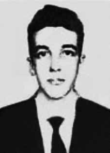

Ivan
Rocha
Aguiar
CIRCUNSTÂNCIAS DA MORTE
Ivan Rocha Aguiar morreu por ferimento de arma de fogo, quando participava de uma manifestação de rua contra a deposição e prisão do governador pernambucano Miguel Arraes, em Recife, no dia 1º de abril de 1964.
Naquela ocasião, estudantes estavam reunidos na Faculdade de Engenharia de Recife quando aproximadamente às 14h horas o Exército invadiu o prédio e expulsou a todos. Em seguida, os estudantes saíram em passeata pelas principais ruas de Recife alertando a população sobre o golpe militar. A principal intenção dos manifestantes era chegar até ao Palácio Campo das Princesas, sede do governo de Pernambuco, no intuito de protestar contra o golpe militar.
Os estudantes marcharam de encontro ao piquete formado por militares na esquina das ruas Dantas Barreto e Marquês do Recife. No momento em que os militares avistaram os estudantes, realizaram um disparo para o alto. Os estudantes revidaram com pedras e cocos vazios, continuando a gritar e entoar palavras de ordem em defesa da legalidade democrática. Então, os militares fizeram disparos na direção dos estudantes, resultando em muitos feridos e dois mortos.
Essas informações constam do depoimento de Oswaldo de Oliveira Coelho, quem assim detalha aquela ocasião: “[…] os estudantes Jonas José de Albuquerque Barros, de 17 anos, secundarista do Colégio Estadual de Pernambuco, e Ivan Rocha Aguiar, de 23 anos, acadêmico de Engenharia; que Jonas José de Albuquerque Barros foi atingido mortalmente com um tiro de revólver na boca que estilhaçou seu maxilar, tendo os estilhaços dos seus ossos e jatos do seu sangue atingido minha face e meu peito, tendo Jonas morrido em meus braços; que Ivan Rocha Aguiar também morreu sob minhas vistas […]”.
Sobre a autoria dos disparos o livro O caso eu conto como o caso foi, de Paulo Cavalcanti, descreve que: “O major Hugo Caetano Coelho de Almeida, conhecido na caserna como Hugo Fodão, tomou das mãos de um praça uma arma automática e, ele próprio, atingiu dois estudantes, um nas costas, outro no rosto, matando-os”.
Ivan e Jonas José Albuquerque Barros foram as primeiras vítimas do regime militar em Pernambuco. O corpo de Ivan Rocha Aguiar foi sepultado no cemitério Santo Amaro, em Recife.
Ivan Rocha Aguiar died from a gunshot wound while participating in a street demonstration against the deposition and arrest of Pernambuco governor Miguel Arraes, in Recife, on April 1, 1964.
On that occasion, students were gathered at the Faculty of Engineering of Recife when at approximately 2 pm the Army invaded the building and expelled everyone. Then, the students went on a march through the main streets of Recife, warning the population about the military coup. The protesters' main intention was to reach the Campo das Princesas Palace, the seat of the Pernambuco government, in order to protest against the military coup.
The students marched against the picket formed by military personnel on the corner of Dantas Barreto and Marquês do Recife streets. The moment the military saw the students, they fired into the air. The students retaliated with stones and empty coconuts, continuing to shout and chant slogans in defense of democratic legality. Then, the military fired shots at the students, resulting in many injuries and two deaths.
This information is contained in the testimony of Oswaldo de Oliveira Coelho, who details that occasion as follows: “[…] the students Jonas José de Albuquerque Barros, aged 17, high school student at the Colégio Estadual de Pernambuco, and Ivan Rocha Aguiar, aged 23, Engineering student; that Jonas José de Albuquerque Barros was fatally shot in the mouth with a revolver shot that shattered his jaw, leaving the fragments of his his bones and jets of his blood hit my face and chest, and Jonas died in my arms; Ivan Rocha Aguiar also died in front of my eyes […]”.
Regarding the authorship of the shots, the book O caso eu conta como o caso foi, by Paulo Cavalcanti, describes that: “Major Hugo Caetano Coelho de Almeida, known in the barracks as Hugo Fodão, took an automatic weapon from the hands of a soldier and, himself, hit two students, one in the back, the other in the face, killing them”.
Ivan and Jonas José Albuquerque Barros were the first victims of the military regime in Pernambuco. Ivan Rocha Aguiar's body was buried in the Santo Amaro cemetery, in Recife.
Iván Rocha Aguiar murió por una herida de bala mientras participaba en una manifestación callejera contra la destitución y arresto del gobernador de Pernambuco, Miguel Arraes, en Recife, el 1 de abril de 1964.
En esa ocasión, los estudiantes se encontraban reunidos en la Facultad de Ingeniería de Recife cuando aproximadamente a las 14 horas el Ejército invadió el edificio y expulsó a todos. Luego, los estudiantes realizaron una marcha por las principales calles de Recife, advirtiendo a la población sobre el golpe militar. La principal intención de los manifestantes era llegar al Palacio Campo das Princesas, sede del gobierno de Pernambuco, para protestar contra el golpe militar.
Los estudiantes marcharon contra el piquete formado por militares en la esquina de las calles Dantas Barreto y Marquês do Recife. En el momento en que los militares vieron a los estudiantes, dispararon al aire. Los estudiantes respondieron con piedras y cocos vacíos, y continuaron gritando y coreando consignas en defensa de la legalidad democrática. Luego, los militares dispararon contra los estudiantes, provocando numerosos heridos y dos muertos.
Esta información está contenida en el testimonio de Oswaldo de Oliveira Coelho, quien detalla esa ocasión de la siguiente manera: “[…] los estudiantes Jonas José de Albuquerque Barros, de 17 años, estudiante de secundaria del Colégio Estadual de Pernambuco, e Ivan Rocha Aguiar, de 23 años, estudiante de Ingeniería; que Jonas José de Albuquerque Barros fue asesinado de un disparo en la boca con un disparo de revólver que le destrozó la mandíbula, quedando los fragmentos de su sus huesos y chorros de su sangre golpearon mi cara y mi pecho, y Jonás murió en mis brazos; Iván Rocha Aguiar también murió ante mis ojos […]”.
Respecto a la autoría de los disparos, el libro O caso eu conta como o caso foi, de Paulo Cavalcanti, describe que: “El mayor Hugo Caetano Coelho de Almeida, conocido en el cuartel como Hugo Fodão, tomó un arma automática de manos de un soldado y él mismo golpeó a dos estudiantes, uno en la espalda y el otro en la cara, matándolos”.
Iván y Jonas José Albuquerque Barros fueron las primeras víctimas del régimen militar en Pernambuco. El cuerpo de Iván Rocha Aguiar fue enterrado en el cementerio de Santo Amaro, en Recife.